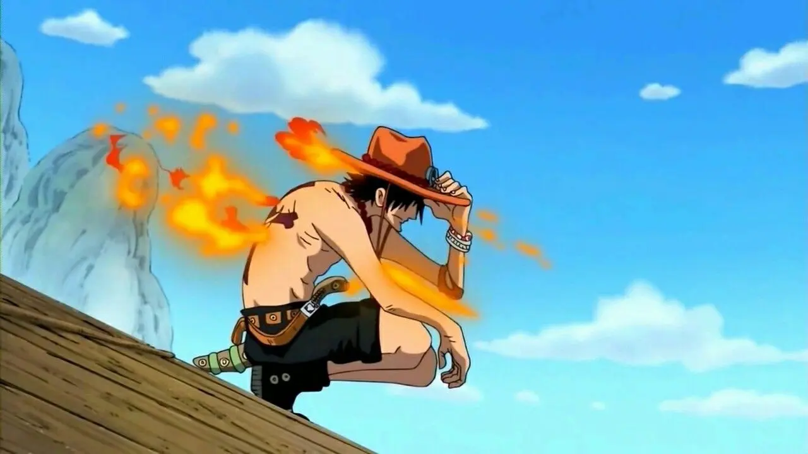
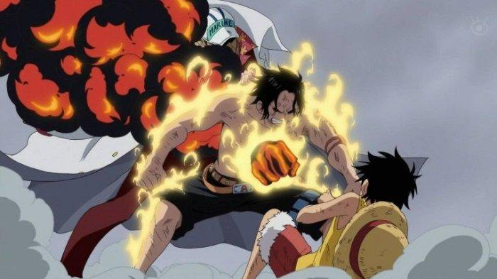
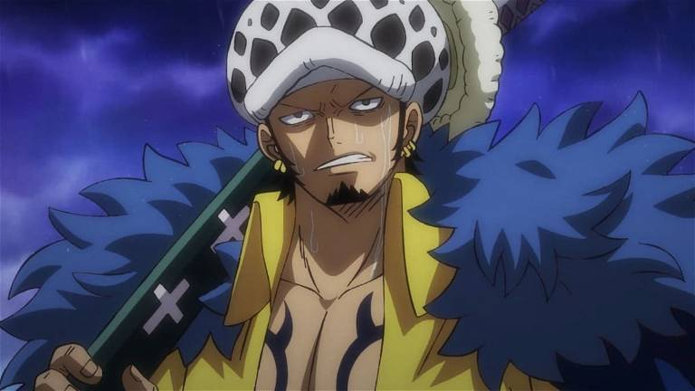
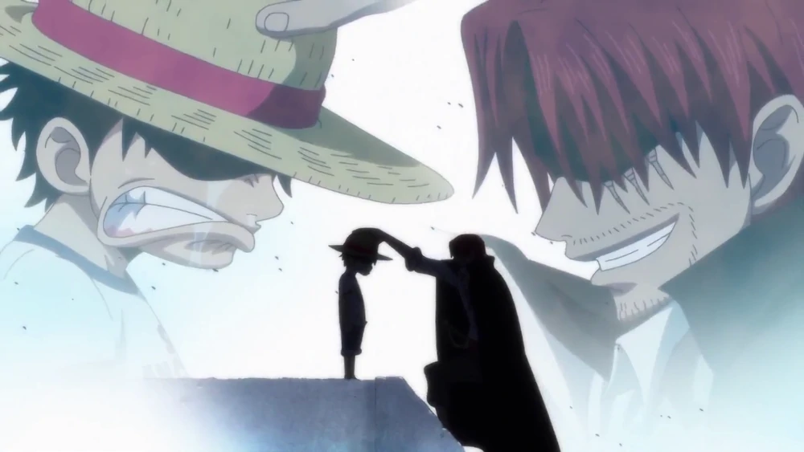

Piratas
En esta página hablaremos de algunos de los piratas más importantes de la serie; dando información sobre como son, que tipo de armas usan, poderes, haki, relevancia etc.
Portgas D. Ace

Apodado Ace «Puño de Fuego», fue el hermano mayor jurado de Luffy y Sabo, y el hijo biológico del difunto Rey de los Piratas, Gol D. Roger, y Portgas D. Rouge. Ace fue adoptado por Monkey D. Garp, como había pedido el mismo Roger antes de su
ejecución. También fue el comandante de la 2º división de los Piratas de Barbablanca y antiguo capitán de los Piratas Spade.
Los eventos que acontecieron durante el arco de Impel Down y de Marineford giran en torno al rescate organizado por su hermano Luffy y su capitán Barbablanca para salvarlo de ser ejecutado por el Gobierno Mundial. Ace fue liberado en el tramo
final de la guerra, pero sacrificó su vida para proteger a Luffy del almirante de la Marina Akainu.
La muerte de Ace finalmente resultó ser el catalizador que llevó a Luffy a entrenar durante dos años para volverse lo suficientemente fuerte como para proteger a sus amigos, siendo uno de los grandes puntos de inflexión de la primera mitad de la obra.

Fruta del diablo
Ace consumió la fruta Mera Mera, una fruta del diablo de tipo logia que le permitía convertirse y generar el elemento del fuego además de controlar las llamas desde su cuerpo, generando así la reputación de "Ace Puño de Fuego". Ace desplegó su inmenso poder
destruyendo una flota entera de barcos de Baroque Works con facilidad. Su estilo de lucha principal es lanzar columnas de fuego dando un puñetazo, su firma como "Puño de Fuego". Él también es inmune a golpes físicos, éstos sólo pasarán a través de su cuerpo
compuesto de fuego.
Haki
De forma no canon Ace es poseedor de los tres tipos de haki, aunque en el propio anime si que se pudo ver como usaba en haki del rey cuando tan solo tenía 10 años.
Arma
Ace llevaba alrededor un cuchillo, pero nunca fue visto usándolo excepto en los flashbacks de sus intentos anteriores para asesinar a Barbablanca. Mientras intentaba asesinarlo, se demostró que Ace usaba armas diferentes, incluyendo un hacha. De un niño parece
haber utilizado un largo bastón como arma, como se muestra en el flashback de Luffy donde lo tenía cubierto de sangre.
Trafalgar D. Water Law

Todo el mundo lo conoce como Trafalgar Law o Cirujano de la Muerte, es un reconocido pirata del North Blue que ejerce como capitán y médico de los Piratas de Heart, siendo a su vez un anterior integrante de los Siete Guerreros del Mar.
Al ser uno de los once Supernovas que desembarcaron en Sabaody hace dos años, forma parte de lo que se conoce como «la peor generación» de piratas de la historia. Fue uno de los lideres de la Alianza Ninja-Pirata-Mink-Samurái, además fue este
mismo el que hablo con Luffy para realizar dicha alianza para asi ayudar al samurai Kiemon. A pesar de que lo acababan de conococer sus motivos eran los siguientes, y es que si bien el motivo de Luffy era completamente puro, ya que solo quería
ayudar a las personas que aunque les acababa de conocer ya se había hecho amigo de ellos. No obstante, Law lo hizo porque gracias a esa alianza podía vengarse de un pirata al cual lo odiaba tan fuertemente que quería matarlo él mismo.
Fruta del diablo
Law consumió la fruta Ope Ope, una fruta del diablo de tipo paramecia, que le otorga el poder para hacer modificaciones a voluntad dentro de una determinada área, por lo que aquellos que quedan atrapados en su room pueden considerarse "pacientes" en una sala de operaciones.
Haki
Puede usar dos de los tres tipos de haki, son el de armadura y observación.
Arma
Law posee una espada llamada Kikoku, según Oda es una espada maldita. Esta espada parece ser una nodachi (espada parecida a las katanas tradicionales, pero mucho más larga, aproximadamente 1,20m de hoja). Law parece bastante diestro en el manejo de la espada, ya que puede cortar
sus objetivos estando estos a una larga distancia, aunque este poder también es gracias a su fruta del diablo.
Shanks

También conocido como Shanks el Pelirrojo, es el capitán de los Piratas del Pelirrojo y uno de los Cuatro Emperadores que gobiernan el Nuevo Mundo. Fue, además, un miembro de la legendaria tripulación de Gol D. Roger, siendo la única banda que logró conquistar con éxito todo Grand Line.
Es el hombre que inspiró a Luffy a seguir su sueño de ser el Rey de los Piratas, y el que encontró la fruta Gomu Gomu que Luffy comió accidentalmente. Es también el padre adoptivo de Uta.
Haki
Shanks posee un nivel de haki monstruoso. Puede usar haki de observación a un gran nivel, siendo capaz de detectar a Aramaki a kilómetros de distancia. Shanks, al igual que otros usuarios de gran nivel de haki, es capaz de ver el futuro.
Shanks demostró poder utilizar busoshoku haki al detener el golpe de magma de Sakazuki cuando éste se disponía a matar a Koby.
Shanks posee una inmensa maestría en el uso del haoshoku haki, que sólo uno de cada varios millones de personas en el mundo puede utilizar. Él fue el primer personaje de la obra en utilizarlo, muchos años antes de la revelación de la existencia del haki, usándolo para intimidar al
Señor de la Costa con una sola mirada, haciendo que huyera despavorido.
Arma
Hasta ahora, Shanks ha sido visto portando dos espadas diferentes. La más común de ver y la que lleva actualmente es un sable largo llamado Gryphon, el cual es de dimensiones más grandes de lo habitual, de un solo filo y una empuñadura de dos manos y guarda cerrada, dentro de una vaina verde.